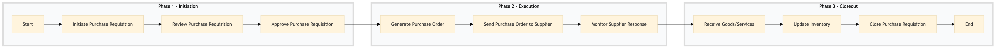

| Role | Steps |
|---|---|
| Department Head | 1.1 |
| Procurement Officer | 1.2 1.3 2.1 2.2 2.3 3.1 3.2 3.3 |
| Finance Manager | 1.3 |
| Step | Name | Role | System | Input | Output | KPI | Dec? | Exc? | Pain Point / Risk |
|---|---|---|---|---|---|---|---|---|---|
| 1.1 | Initiate Purchase Requisition | Department Head | Oracle OPERA Cloud | Purchase requisition form | Submitted purchase requisition | Less than 5 minutes | N | Y | Incorrect item codes or quantities leading to delays. |
| 1.2 | Review Purchase Requisition | Procurement Officer | Oracle OPERA Cloud, Birchstreet Procurement | Submitted purchase requisition | Reviewed purchase requisition | Less than 10 minutes | Y | N | Overlooking budget constraints during review. |
| 1.3 | Approve Purchase Requisition | Finance Manager | Oracle OPERA Cloud, SAP S/4HANA | Reviewed purchase requisition | Approved purchase requisition | Less than 15 minutes | Y | Y | Delays in approving due to budgetary concerns. |
| 2.1 | Generate Purchase Order | Procurement Officer | Oracle OPERA Cloud, Birchstreet Procurement | Approved purchase requisition | Generated purchase order | Less than 20 minutes | N | Y | Incorrect supplier details leading to delivery delays. |
| 2.2 | Send Purchase Order to Supplier | Procurement Officer | Oracle OPERA Cloud, Birchstreet Procurement | Generated purchase order | Sent purchase order | Less than 30 minutes | N | Y | Supplier communication issues causing delays. |
| 2.3 | Monitor Supplier Response | Procurement Officer | Oracle OPERA Cloud, Birchstreet Procurement | Sent purchase order | Supplier response | Less than 1 hour | Y | N | Lack of timely supplier responses. |
| 3.1 | Receive Goods/Services | Receiving Officer | Oracle OPERA Cloud, IDeaS G3 RMS | Supplier response | Received goods/services | Less than 24 hours | Y | Y | Incorrect or damaged items received. |
| 3.2 | Update Inventory | Receiving Officer | Oracle OPERA Cloud, IDeaS G3 RMS | Received goods/services | Updated inventory records | Less than 30 minutes | N | Y | Inventory discrepancies due to manual entry errors. |
| 3.3 | Close Purchase Requisition | Procurement Officer | Oracle OPERA Cloud, Birchstreet Procurement | Updated inventory records | Closed purchase requisition | Less than 1 hour | N | N | No pain point identified. |
The FN-PR-01 process ensures that purchase requisitions are properly initiated, reviewed, and approved within a Marriott full-service hotel. This process is crucial for managing procurement activities efficiently and adhering to financial controls.